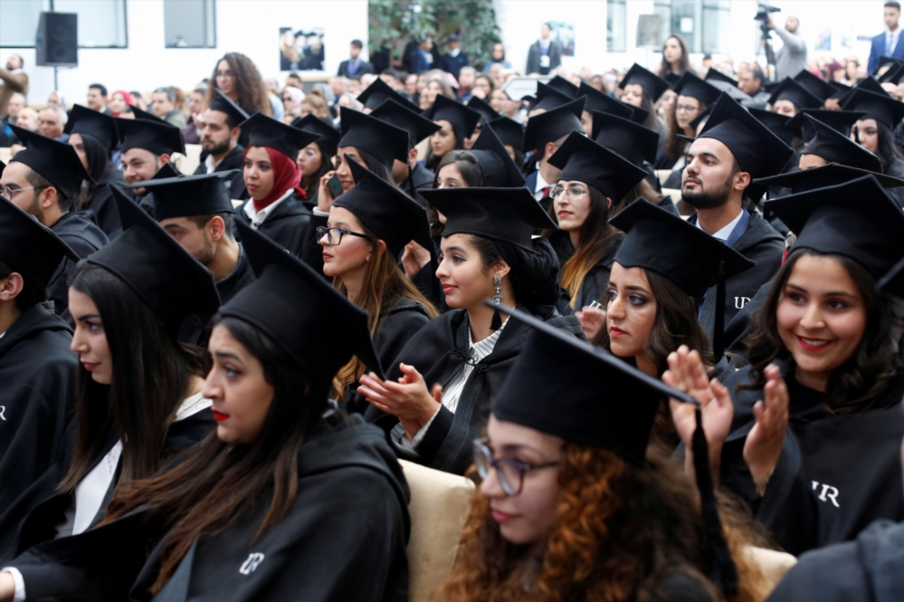

L'Éducation Supérieure et les Universités
L'éducation supérieure est un sujet intégral dans le statut des langues au Maroc. Au Maroc, l’enseignement supérieur des sciences est encore en français. Cette situation crée de la difficulté pour les étudiants qui ne peuvent pas le parler. Ils doivent passer d’une langue à l'autre après le secondaire, alors pour les enfants avec des étudiants qui ne sont pas fort en français, ils perdent de l'accès aux études.
Par exemple, une étude de 1996 a trouvé que 40 pour cent des élèves de sciences ont changé leur discipline pour étudier les humanités à cause de leur manque de compétence en français. De plus, les professeurs de mathématiques ou de sciences dans des écoles primaires et secondaires ont des difficultés parce qu'ils ont appris et reçu leur diplôme dans la langue française. Souvent les manuels scolaires sont en français, et il n’y a pas beaucoup d'articles de recherche écrits en Arabe. Le fait que le français est la langue de l'éducation pose des obstacles à la force de l’argument des mouvements contre le français coloniale parce que le français garde son statut de pouvoir.
Ces statistiques montrent que l'éducation supérieure marocaine ne donne pas beaucoup d'opportunités aux élèves qui ne parlent pas le français.
Parce que la langue française est essentielle pour l'éducation supérieure, ceux qui peuvent le parler vont en France pour faire leurs études. Par conséquent, les Marocains sont la plus grande communauté d’étudiants étrangers en France: environ 10% des étudiants étrangers. En 2018, ce nombre d' étudiants a été près de 40,000. Quand ils retournent au Maroc pour travailler, leurs diplômes français sont valorisés sur le marché du travail marocain à cause de leur prestige.
